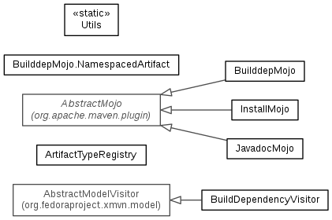

JavaScript is disabled on your browser.
Skip navigation links
Overview
Package
Class
Use
Tree
Deprecated
Index
Help
XMvn 4.2.0
Prev Package
Next Package
Frames
No Frames
All Classes
Package org.fedoraproject.xmvn.mojo

Class Summary
Class
Description
ArtifactTypeRegistry
BuildDependencyVisitor
BuilddepMojo
InstallMojo
JavadocModule
JavadocMojo
ModuleGleaner
Utils
Skip navigation links
Overview
Package
Class
Use
Tree
Deprecated
Index
Help
XMvn 4.2.0
Prev Package
Next Package
Frames
No Frames
All Classes
Copyright © 2012–2023
Red Hat, Inc.
. All rights reserved.